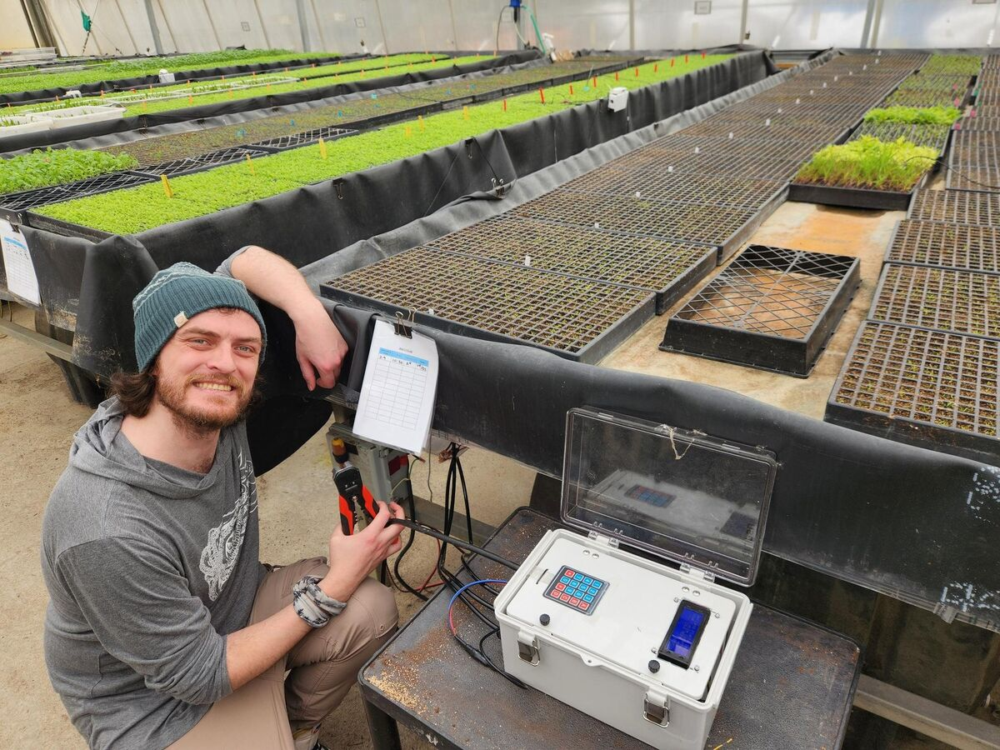
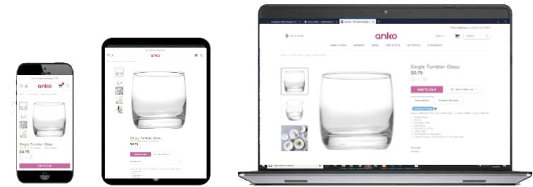

Greenhouse automation, research design & cloud integrations

Wetland Plants, inc. needed to turn a single prototype into a production irrigation system. I built eight microcontroller units from the original design and rewrote their software to manage water and nutrient delivery for up to 95,000 seedlings at once. The engagement grew from there: I consulted on research design and statistics for seed germination trials, built automations and integrations across FileMaker and AWS, and ran security audits on their systems.
B & G Foods is one of the largest food-brand parent companies. Contracting with Digital Yalo, I was the primary developer on the WordPress rebuild of bgfoods.com and helped move 45 of its brand sites onto the platform. The work included 31 API-driven corporate pages, custom post types and URL structures, a Node.js scraper to migrate content from the legacy sites, multilingual setups and an automated deploy pipeline, plus documentation and training for the wider team.
E-commerce design, development & conversion optimization

As the primary e-commerce designer and developer for Anko, a Kmart Australia subsidiary launching in the U.S., I turned a blank-slate BigCommerce template into a high-performing online store. I designed and built more than 30 pages and templates, wrote a custom React checkout backed by automated tests, and used A/B testing, analytics and recorded user sessions to refine every step of the funnel. In 11 months, the store's purchase conversion rate tripled.
*Anko closed all of its US based stores due to COVID-19.
A distinguished dietitian in Hawaii needed a professional home online. I designed a custom logo and a clean, mobile-friendly brochure site that presents their services clearly and makes it easy for new clients to get in touch. The site is hosted at no ongoing cost, so the budget goes into the practice instead of monthly fees.
Better Later is a free habit tracker grounded in behavioral psychology. It helps people understand their own patterns and make realistic, incremental progress, without judgment and without giving up their privacy. It installs from the browser as a progressive web app, works offline, needs no account, and turns daily check-ins into charts and statistics that make progress visible.
Study your own subconscious behaviors to incrementally achieve your goals — self-guided, non-judgmental, and verifiably private.
Better Later helps you recognize your incremental successes, make realistic goals based on real data about your habits, and see your progress visually with charts, graphs, and statistics.
Incremental approachSet your own pace to cut back using hard data, not willpower alone.
Non-judgmentalYou could be tracking anything; the app makes no assumptions about your choices.
DiscreetNo account, no download required. Visit the site and add to homescreen (then it works offline too).
Data-drivenGenerate visualizations to make informed decisions and break out of autopilot.
A successful website can take months to develop and cost thousands of dollars.
That’s why many people choose to build their own. But without the right tools and a working knowledge of web technology, a DIY site often falls short of what it was meant to do. My guide gives you the structure, and I’m here for the parts that need an expert.
Human-centered solutions for messy, real-world problems
Apt Logic Solutions brings a human understanding to imperfect problems, and finds the solutions that actually fit. From social systems and psychology to complex architecture for tech systems, Apt Logic is ready for whatever hurdle comes next.
“
In 2013, I dropped out of a psychology program at the University of Alaska, Fairbanks. The math just wasn’t mathing to make a living in that field. Instead, I set out to teach myself to code. With the help of serious family connections, inspiring mentors and 8 years of dedication, I struggled up from scratch to a lead role on a serious contract with a Fortune 500 company.
After… well… knocking that out of the park, I decided to go back to finish my Psychology degree in Anchorage, Alaska. I ended up on the chancellor’s list, skipped 3 biology prereqs to ace an upper division bioinformatics class, and wrote a 27-page thesis on impulsivity in rats that compiled results using a Python data analysis pipeline.
At each step of the way, I felt like I was failing and falling short of the traditional path, making up for perceived incompetencies by working harder. And yet, looking back, it looks a lot more like perseverance.
Want my advice?
Be bad at something, and be bad until you’re good, then go be bad at something else.
Contact
Get in touch
Tell me where you're headed and what's in the way, and together we'll map out the most practical path forward.